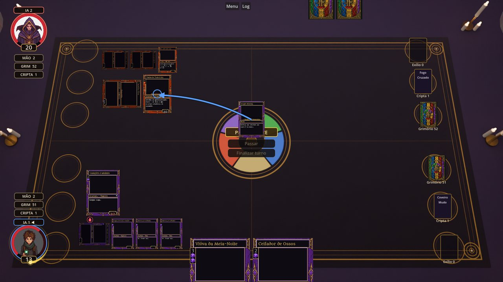
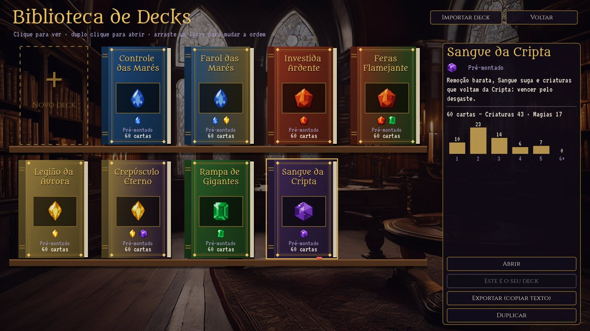
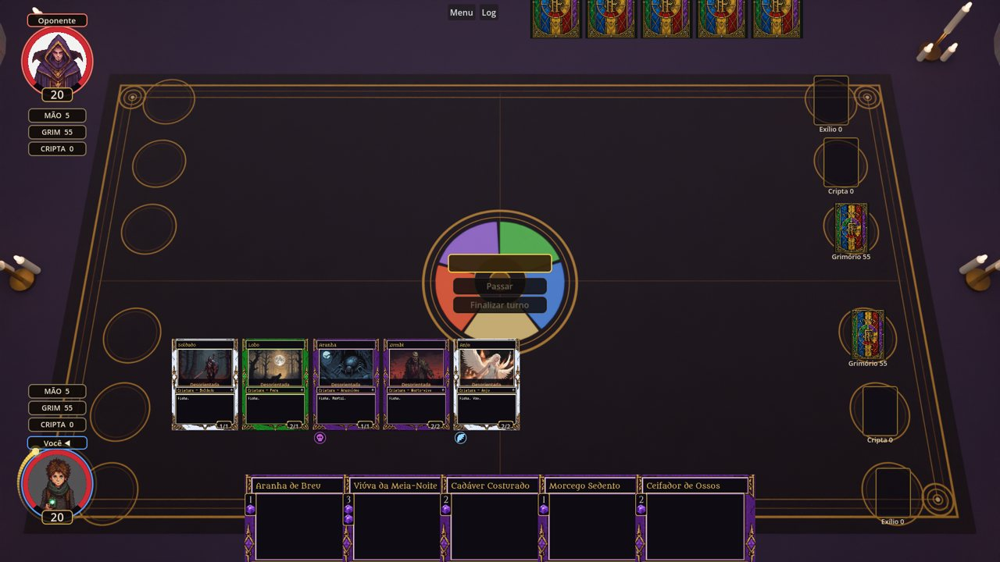
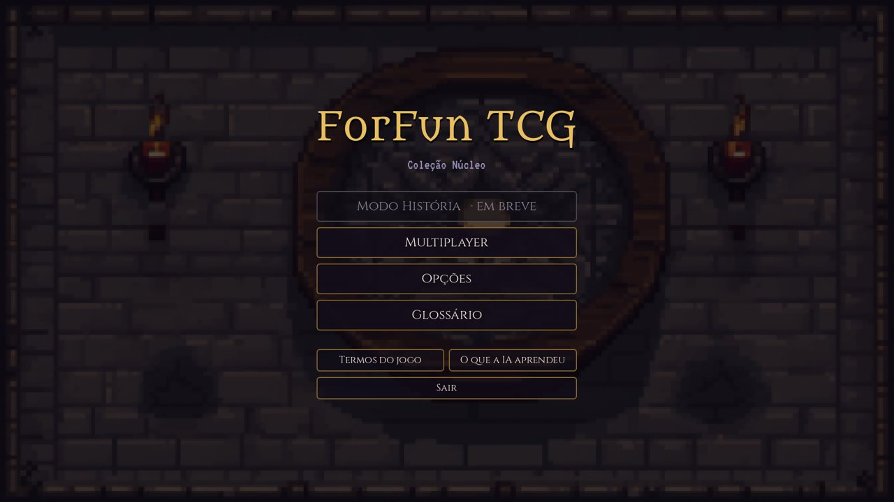

Um jogo de cartas estratégico em que cinco elementos disputam a mesa. Monte o seu deck, carregue a Essência e vença pelo desgaste, pela pressa ou pelo controle.




A Coleção Núcleo: cinco elementos, cartas de duas cores e incolores de metal.
Partidas 1 contra 1 e 2 contra 2, com uma IA que aprende com o seu jeito de jogar.
Online por IP: 1 contra 1, ou 2 contra 2 com amigos e IA nos lugares vazios.
Estante de decks com editor por arrasto, zoom nas cartas e troca por texto.
Responda às jogadas do oponente com setas mostrando cada alvo.
Todos os termos do jogo explicados dentro do próprio jogo.
ForFunTCG-beta-windows.zip.O Windows pode mostrar "O Windows protegeu o computador", porque o jogo ainda não tem assinatura digital. Clique em Mais informações e depois em Executar assim mesmo.
Para jogar online, quem hospeda precisa liberar a porta 24680 (UDP) no roteador, ou os dois usam uma rede virtual como Radmin VPN ou ZeroTier.
As artes das cartas ainda estão sendo feitas, o Modo História vem depois e o equilíbrio das cartas ainda muda. Encontrou um problema ou tem uma ideia? Conte para quem te mandou este link.